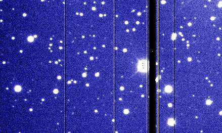
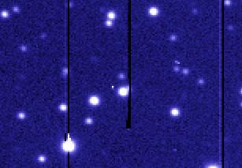

|
The "raw" dataset is a series of exposures taken through different
filters. The filters are needed to rebuild the colour information, as
the CCD detectors used work in "black and white" for more flexibility
and more sensitivity. The basic filters are R (red), V ("visual",
green), B (blue), but many others can be used: UV or IR to expand the
"colour" range, or filters with a very narrow transmission centered on
the colour emitted by atoms or molecules found in space. The most
common one is the red H_alpha, that highlights the Hydrogen gas.
In each filter, several images are acquired. This is to increase the
total exposure time (and see fainter features in the sky), but also to
cover for defects and features that appear in the detector. For
instance, we often use CCD mosaics, where gaps are present between the
various CCDs. Taking various images at slightly different positions
enable us to recover the information lost in the gaps.
|
Fig 1: a raw image (click for full scale)
|
|
The individual frames must be cleaned from all the instrumental and
electronic effects that affect them. This is briefly described in
another page.
Then,
the images taken in a same filter must be registered, aligned and
co-added.
|
Fig 2: Co-added image (click for full scale)
|
|
At this stage, the images are still in FITS, the astronomical format,
with one FITS file per filter. The FITS file have 16 bits (65536
levels of grey). In order to continue the processing, the images are
converted into a Photoshop PSD file, that contains one filter per
layer. As the final images must be published with only 8 bits per
colour (256 levels in R, G and B for a jpeg image), we must squeeze the
full 16 bit dynamic range into only 8 bits. We must also change the
response curve of the image so to enhance the faint structure. The
change of response curve must be done before the conversion from 16 to
8 bits, otherwise some nasty solarisation effects would appear. A
convenient way to do this is to use the powerful
FITS Liberator plug-in
for Photoshop.
Now, the different filters can be mapped to their colours in Photoshop,
and the image can be displayed as a colour image. The result looks
horrible. The images still contain many artifacts that need to be
cleaned away.
|
Fig 3. Image converted from FITS to Photoshop, adjusting the dynamic
range, but not cleaned. (click for full scale)
|
|
|
|
a.- Bad columns and traps: a vertical line that must be cleaned by cloning
nearby regions. Careful not to create new, fake stars, or to leave
"half stars" in their track.
|

Bad columns. Most of them are single columns, but it can happen that a group of columns is bad
|

CCD trap: a dead pixel, near the center of the image, kills the top of its column
|
|
b.- Stuff on the detector. Although it should not happen, sometimes a
foreign body (like a hair, or dust) can find its way into the CCD
housing and ends up on the detector. These must be erased by cloning
nearby regions.
Clean these out
|
Foreign stuff on the detector.
|
|
c.- Cosmic rays: when a high-energy particle hits the CCD, it appears as a
very sharp bright spot on the image. They can usually be identified
because they are much sharper than the stars. They must be removed by cloning
nearby regions.
|

Cosmic rays, that appear as bright dots.
|

Zoom on cosmic rays. They appear as dots or tiny streaks. They are always very sharp.
|
|
d.- Saturation bleed: each pixel in the CCD can store only a certain
amount of electrons. If a pixel is illuminated by a bright star, that
pixel will fill up and start to overflow into neighboring pixels. When
the image is read out from the detector, this causes trails that must
be removed. Clean out by cloning nearby regions.
|
Saturation trails. Moderate case on the left, and nastier on the
center and right.
|
|
When repairing the region right next to the star, it sometimes
works best to copy an horizontal strip including the star with the
horizontal diffraction spike (see g- below), rotate it by 90deg, and then use
this rotated star to patch the original. One must be careful not to
hide real stars doing this.
|
1- An example of saturation bleed correction: the starting point.
3- Rotate 90deg, and align
2- Select an area including the star together its diffraction spikes
4- crop and mask the rotated region so it does not hide anything
important.
|
e.- Oversaturation dot: in extreme cases of saturation, the center of a
star can appear black. Clean out by painting over.
|

At the center of a saturated star, it can happen that a black spot appears.
|
|
f.- Satellite streaks: it can happen that an artificial satellite
crosses the field of view, leaving a streak.
Because the satellite rotates, its brightness varies with time. The
intensity of the line can therefore vary.
These marks are removed by cloning nearby areas.
|
The mark of an artificial satellite.
|
|
g.- Diffraction pattern: the "spider", that is the arms that support the
secondary mirror of the telescope, causes a diffraction pattern that
usually appears as a cross around the brightest stars. This pattern is
part of the image, and must not be cleaned out. Careful, sometimes the
diffraction pattern can be hidden by the saturation trail. The
diffraction patterns are part of the image,
they should not be removed.
|
A diffraction pattern (in this case, a cross at 45deg). Not to be
confused with the sharper saturation trail (in this case vertical)
|
|
h. Background steps: Sometimes, the combination of various
images taken at slightly different positions results in steps in the
background of the image. This is difficult to correct.
|
Background steps caused by the co-addition of various images
|
|
i.- Ghosts: It can happen that the light of a bright star gets
reflected somewhere in the instrument, and forms secondary, out of
focus images, that appear as large doughnuts. Sometimes they are left
in the final image, sometimes not.
|
Reflection ghosts.
| | |
The final, stunning image is then ready for publication.

{kind=link}
{kind=link}
{kind=link}
{kind=link}
{kind=link}
{kind=link}
{kind=link}
{kind=link}
{kind=link}
{kind=link}
{kind=link}
{kind=link}
{kind=link}
{kind=link}